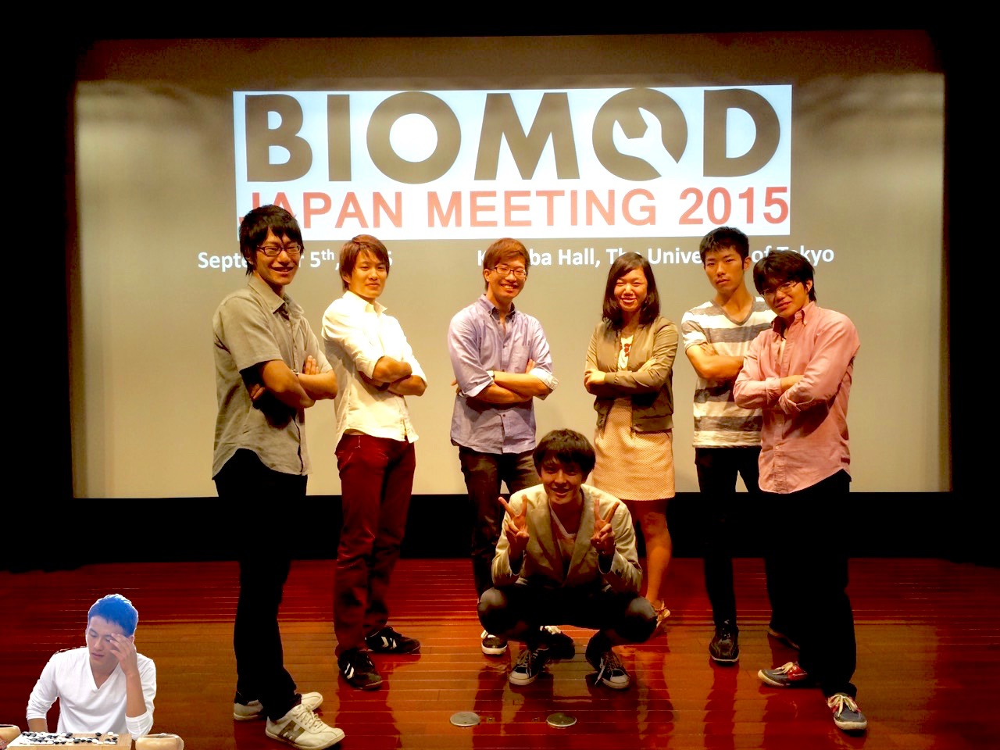

Motivation
At the “Scramble Crossing” in Shibuya, a tourist spot known as a very crowded crossing in Tokyo, we often see the following phenomenon. During the traffic light is red, people are waiting on every corner.

When it turns green, people start to cross the intersection. At the time, the intersection is very crowded with them.
This phenomenon gave us a hint on our research: the law of entropy increase.
In the natural world, any system in an unstable state shifts to the most stable state, i.e., from a state with high free energy to that with the lowest. This natural phenomenon proceeds so as to minimize the entire free energy, and the lowest energy state is called the equilibrium. Especially in the micro world, every molecule moves to form a more disordered state toward the equilibrium. This movement is generated by the law of entropy increase.
Let’s think about an example of the situation of spilling ink on water surface. Soon after, the ink will diffuse into the whole water. On the other hand, it is impossible for the diffusing ink to get back together without any force from the outside. This is the effect of the law of entropy increase.
In this project, we propose a new kind of device made of tiny water droplets enclosed by lipid layer in oil phase, which can extract the free energy produced in the process of entropy increase as a proton (H+ ion) concentration gradient in a pair of droplets.
By using this proton gradient with F0F1ATPase, we will be able to produce ATP. All living things from bacteria to human beings use ATP (Adenosine Triphosphate) as an energy source. It can be said that this device works as a battery inside our body in that it supplies ATP. So we named the new device “Micro-Bio-Battery”.
For the first step, we tried to produce proton concentration difference between tiny water droplets.